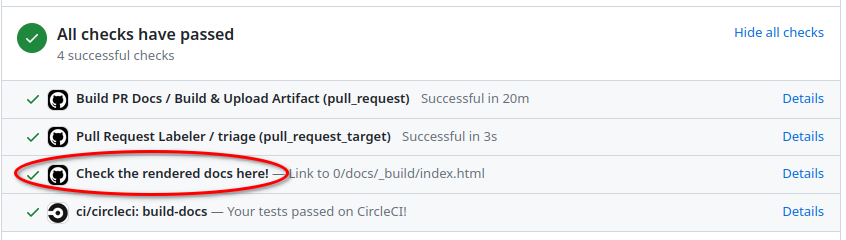
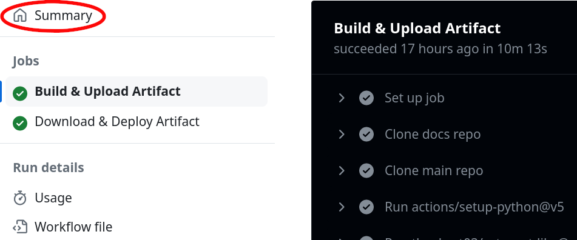
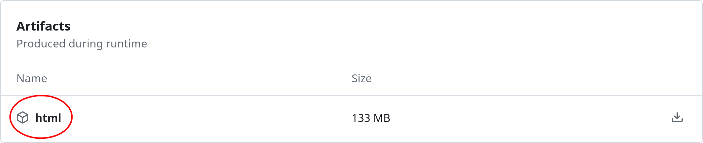

Contributing Documentation#
This guide will teach you how to contribute to napari’s documentation.
To begin contributing, you will need:
Choose an approach to contributing:
Contributing without a local setup: This is a simpler approach that allows you to make small changes to the documentation without needing to set up a local environment. This approach is useful for quick edits or if you are not familiar with Git or the command line. You can also find the “Edit on GitHub” button in the right sidebar which allows you to easily edit directly on GitHub (press the edit pencil icon). However, some pages are autogenerated and do not have a corresponding page on GitHub.
Contributing with a local setup: This is the recommended approach if you are making significant changes to the documentation, or if you want to preview your changes before submitting them. This approach requires a local setup of the napari and docs repositories.
Ask for guidance#
If you’d like to contribute a brand new document to our usage section, it’s worth opening an issue on our repository to discuss the content you’d like to see and get some early feedback from the community. The napari team can also suggest what type of document would be best suited, and whether there are already existing documents that could be expanded to include your proposed content.
Organization of the documentation#
The napari documentation is built from multiple sources that are organized into repositories:
The main napari documentation is built from sources located at the napari/docs repository on GitHub. That repository is where all the narrative documentation (e.g. tutorials, how-to guides, etc. on napari.org) pull requests should be made. This narrative napari documentation is written in MyST markdown, a version of commonmark Markdown (see a markdown cheatsheet) with some additional features.
Some of the documentation about plugins resides in the napari/npe2 repository (e.g. the contributions reference page) and should be modified there. This is documentation is written with Jinja.
The examples gallery is generated from Python source files and changes to the gallery should be made to the napari/napari repository (see also the guide on adding examples to the gallery).
Changes to how napari.org appears site-wide are made to the napari-sphinx-theme.
The API reference documentation is autogenerated from the napari source code docstrings. Docstrings are written in the reStructuredText format and any modifications to them should be submitted to the napari/napari repository.
Importantly, all of the dependencies for building the documentation are in the the
pyproject.tomlof napari/napari under the optional dependenciesdocsandgallery.
What types of documents can I contribute?#
Go to the napari/docs repo to find examples of documents you might
want to contribute. The paths are listed in parentheses below.
Explanations (in
napari/docs/guides): in depth content about napari architecture, development choices and some complex featuresTutorials (in
napari/docs/tutorials): detailed, reproducible step by step guides, usually combining multiple napari features to complete a potentially complex taskHow-tos (in
napari/docs/howtos): simple step by step guides demonstrating the use of common featuresGetting started (in
napari/docs/tutorials/fundamentals): these documents are a mix of tutorials and how-tos covering the fundamentals of installing and working with napari for beginners
The Examples gallery sources are in the main napari/napari repository
and show code examples of how to use napari.
Plugin documentation
Some of the source files for the Plugin documentation are
autogenerated from sources in the napari/npe2
repository. Any edits should be made in the napari/npe2 repo, and not to the
copy you may have in the napari/docs folder. These files’ names start with the
_npe2_ prefix and are located under the docs/plugins folder. They will be
generated when the documentation is built and the
prep_docs.py
script is run. See our
Makefile for more details.
Got materials for a workshop?
If you already have teaching materials e.g. recordings, slide decks or Jupyter notebooks hosted somewhere, you can add links to these on our napari workshops page.
Formats and templates#
Our goal is that all tutorials and how-tos are easily downloadable and executable by our users. This helps ensure that they are reproducible and makes them easier to maintain. Jupyter notebooks are a great option for our documents, because they allow you to easily combine code and well formatted text in markdown and can be executed automatically. However, their raw JSON format is not great for version control, so we use MyST Markdown documents in our repository and on napari.org.
If you are amending existing documentation, you can do so in your preferred text editor. If you wish to add a new tutorial or a how-to, we recommend you use our template. Inside the template you’ll find handy tips for taking screenshots of the viewer, hiding code cells, using style guides and what to include in the required prerequisites section.
To use the template, make a copy of docs/developers/documentation/docs_template.md
and rename it to match your content. You can edit the template directly in
Jupyter notebook, or in your preferred text editor.
Already have a notebook?
If you have an existing .ipynb Jupyter notebook that you’d like to contribute, you can convert it to MyST markdown and then edit the .md file to prepare it for contributing. For the conversion, you can install the jupytext package. Run jupytext your-notebook.ipynb --to myst to create a new MyST version of your file,
your-notebook.md. Edit this file to include the relevant sections from the docs template.
Contributing to the napari documentation without a local setup#
If you would like to see new documentation added to napari or want to see changes to existing documentation, but are not clear on these instructions or don’t have the time to write it yourself, you can open an issue.
If you are adding new documentation or modifying existing documentation and would prefer a simpler workflow than the local setup guide described below, you can use the GitHub web interface to open your pull request by either uploading file(s) from your computer, creating and editing a new file or editing an existing file on the napari/docs GitHub repository. It’s best if you first fork the napari/docs repository to your own GitHub account, create a feature branch, upload/create/edit files through the GitHub web interface, and then open a pull request from your fork back to napari-docs.
When you submit your PR, CI will kick off several jobs, including generation of a preview of
the documentation. By default, CI will use the slimfast build (“make target”), which
doesn’t build any content from outside the docs repository or run any docs notebook cells.
This is great for seeing the copy and formatting. If you want to preview other elements,
you can trigger more complete builds by commenting on the PR with:
@napari-bot make <target>
where <target> can be:
html: a full build, just like napari.org livehtml-noplot: a full build, but without the gallery examples fromnapari/naparidocs: only the content fromnapari/docs, with notebook code cells executedslimfast: the default, only the content fromnapari/docs, without code cell executionslimgallery:slimfast, but also builds the gallery examples fromnapari/napari
For more information about these targets see the “building locally” section of the documentation, including the part on specialized builds.
Once the jobs complete you will also be able to preview the documentation by
using the Check the rendered docs here! action at the bottom of your PR, which will go to a
preview website on CircleCI. Alternatively, you can download a zip file
of the build artifact and open the html files directly in your browser. For a build triggered by a comment, use
the “Triggered Docs Artifact Build” link.
If needed, a member of the maintenance team will help with updating the napari.org table of contents where necessary (by placing a reference to your new file in docs/_toc.yml) and making sure your documentation has built correctly.
Contributing to the napari documentation with a local setup#
Attention
We now recommend using pixi for local doc builds. It works natively on Windows, macOS, and Linux, and it will automatically clone the main napari/napari repository inside its environment. You might still prefer make for headless builds, or when adding gallery examples (which requires a full local napari clone). Follow this link for the advanced make instructions.
0. Prerequisites#
Fork then clone the documentation repository napari/docs to your machine. To clone the repository, you can follow any of the options in the GitHub guide to cloning (if you run into issues refer to the troubleshooting guide). We recommend installing the GitHub CLI as it is easy to set up repository access permissions from the GitHub CLI and it comes with additional upside, such as the ability to checkout pull requests.
You can create a local cloned version of the documentation using one of these three options.
Fork on GitHub and clone using GitHub CLI (recommended):
# Note you might have called your repo a different name other than "docs" - "napari-docs" is recommended gh repo clone <your-username>/docs napari-docs cd napari-docs git remote add upstream https://github.com/napari/docs.git
Using GitHub CLI to fork and clone with one command:
# Fork and Clone in one step (but uses default doc name) gh repo fork napari/docs --clone --remote cd docs
Fork on GitHub and clone using Git directly (replace
<your-username>with your GitHub handle):git clone https://github.com/<your-username>/docs.git napari-docs cd napari-docs git remote add upstream https://github.com/napari/docs.git
Note
To reduce confusion and possible conflicts, the docs fork is being cloned into
a local repository folder named napari-docs. Alternately, you could also
rename the repository when forking napari/docs to napari-docs and then clone it via gh repo clone <your-username>/napari-docs.
It is important that you clone the napari/docs repository to a path that does not contain spaces.
For example, C:\Users\myusername\Documents\GitHub\napari-docs is a valid path, but
C:\Users\my username\Documents\GitHub\napari-docs is not.
1. Write your documentation#
Depending on the type of contribution you are making, you may be able to skip some steps:
If you are amending an existing document you can skip straight to Preview your document
For all other documentation changes, follow the steps below.
How to check for broken links
If you have modified lots of document links, you can check that they all work by running make linkcheck-files in the napari/docs folder. However, this can take a long time to run, so if you have only modified links in a single document, you can run:
make linkcheck-files FILES=path/to/your/document.md
2. Update the table of contents (TOC)#
Optional: editing examples or docstrings?
If you’re changing gallery examples in napari/napari or API docstrings and want to preview those local edits, the default pixi environment won’t pick them up. Use the advanced make instructions for that workflow. Most contributors can skip this.
If you are adding a new documentation file, add your document to the correct folder based on its content (see the list above) and update docs/_toc.yml.
If you’re adding a document to an existing group, simply add a new - file: entry in the appropriate spot. For example, if I wanted to add a progress_bars.md how to guide, I would place it in docs/howtos and update _toc.yml as below:
- file: howtos/index
subtrees:
- titlesonly: True
entries:
- file: howtos/layers/index
subtrees:
- titlesonly: True
entries:
- file: howtos/layers/image
- file: howtos/layers/labels
- file: howtos/layers/points
- file: howtos/layers/shapes
- file: howtos/layers/surface
- file: howtos/layers/tracks
- file: howtos/layers/vectors
- file: howtos/connecting_events
- file: howtos/napari_imageJ
- file: howtos/docker
- file: howtos/perfmon
- file: howtos/progress_bars # added
To create a new subheading, you need a subtrees entry. For example, if I wanted to add geo_tutorial1.md and geo_tutorial2.md to a new geosciences subheading in tutorials, I would place my documents in a new folder docs/tutorials/geosciences, together with an index.md that describes what these tutorials would be about, and then update _toc.yml as below:
- file: tutorials/index
subtrees:
- entries:
- file: tutorials/annotation/index
subtrees:
- entries:
- file: tutorials/annotation/annotate_points
- file: tutorials/processing/index
subtrees:
- entries:
- file: tutorials/processing/dask
- file: tutorials/segmentation/index
subtrees:
- entries:
- file: tutorials/segmentation/annotate_segmentation
- file: tutorials/tracking/index
subtrees:
- entries:
- file: tutorials/tracking/cell_tracking
- file: tutorials/geosciences/index # added
subtrees: # added
- entries: # added
- file: tutorials/geosciences/geo_tutorial1 # added
- file: tutorials/geosciences/geo_tutorial2 # added
3. Preview your document#
If your documentation change includes code, it is important that you ensure the code is working and executable. Examples are automatically executed when the documentation is built and code problems can also be caught when previewing the built documentation.
There are two ways you can build and preview the documentation website as it would appear on napari.org:
building locally - this requires more setup but will allow you to more quickly check if your changes render correctly.
view documentation in a GitHub pull request - this requires no setup but you will have to push each change as a commit to your pull request and wait for the continuous integration workflow to finish building the documentation.
Tip
To see the markdown document structure and content change in real-time without building, you can use a MyST markdown preview tool like VScode with the MyST extension or MyST live preview. This can also help you to spot any markdown formatting errors that may have occurred. However, this MyST markdown preview will have some differences to the final built html documentation due to autogeneration, so it is still important to build and preview the documentation before submitting your pull request.
3.1. Building locally#
To build the documentation locally, we recommend using pixi, which provides a simple cross-platform approach and automatically clones the main napari repository inside its environment.
Install
pixiand restart your terminal. Verify with:pixi --versionIf you get an error such as command not found, then
pixiis not properly installed.In your local
napari-docsfolder (see Prerequisites), install the environment:pixi installTIP: Fixing “Failed to download and build napari”
If you get
unexpected panic during PyPI resolution: Failed to do lookahead resolution: Failed to download and build `napari @ git+https://github.com/napari/napari.git@main`
delete your PyPI cache (see the cache path via
pixi info) and try again.You can test the installation by running a quick build (also see the next section for specialized builds):
pixi run slimfast
Once the build is completed, rendered HTML will be placed in docs/_build/html. Find index.html in this folder and drag it into a browser to preview the website with your new document.
You can also run this Python one-liner to deploy a quick local server on http://localhost:8000:
$ python3 -m http.server --directory docs/_build/html
Note
The entire build process pulls together files from multiple sources and can be time consuming, with a full build taking upwards of 20 minutes. Additionally, building the examples gallery, as well as executing notebook cells, will repeatedly launch napari, resulting in flashing windows.
Depending on what you want to contribute, you may never need to run the full build locally. See Running a full or partial build for details.
Running a full or partial build#
To run a full documentation (docs + gallery + notebooks) build from scratch, matching what is deployed at napari.org, run:
pixi run html
from the root of your local clone of the
napari/docsrepository. Note that this is slow and can take upwards of 20 minutes.If the changes you have made to documentation don’t involve the gallery of napari examples, which are in the
examplesdirectory in thenaparirepository, you can speed up this build by running:pixi run html-noplot
This will skip the gallery build but it will still build all of the other content, including the UI architecture diagrams, events reference, and preferences, which are generated from sources in the
naparirepository. This will also run all notebook cells.If you only want to edit materials in the
docsrepository, including notebook code cell outputs (e.g. tutorials), but you don’t need any of the sources innapari/naparibuilt:pixi run docs
If you only need to edit text in the
docsrepository — and neither build sources fromnapari/naparinor execute notebook cells — use the fastest docs-only target:pixi run slim
or
pixi run slimfast
slimis single-threaded andslimfastis multi-threaded, which should be faster on multi-core machines.
Update documentation on file change
Use -live variants to auto-build on save with a live browser preview at http://127.0.0.1.
For example:
pixi run html-noplot-live
or
pixi run docs-live
Note that this will still execute the docs repository notebook code cells,
resulting in napari windows popping up repeatedly.
or for quick docs-only iteration:
pixi run slimfast-live
These will not build any of the external content (such as the gallery) and will
not execute code cells. slimfast will run the build in parallel, which can be
significantly faster on multi-core machines (under a minute), while slimfast-live
will open a browser preview and auto-rebuild any pages you edit.
The first run will be a full build of that target; subsequent rebuilds only process changed files.
Additional utilities#
To clean up (delete) generated content, including auto-generated
.rstand.mdfiles, as well as thehtmlfiles, you can use:pixi run clean
Running this is a good idea if you have not built the documentation in a long time and there may have been significant changes to the
docsrepository, e.g. changes to the table of contents or layout.To clean up the files generated for the examples gallery, you can use:
pixi run clean-gallery
Running this is a good idea if you have not built the documentation in a long time and there may have been significant changes to the
napariexamples.To generate the source files from the napari repository, including the UI architecture diagrams, events reference, and preferences, you can run:
pixi run prep-docs
Note: this can take upwards of 10 minutes. In most cases
pixi run prep-stubswill suffice to generate stub files.
Advanced: Using make for headless builds and gallery examples
If you need to use make (e.g., for headless builds, or to add new gallery examples that require a full local napari clone), here’s the full reference moved from the main flow.
Make: Prerequisites
Fork and clone the napari and docs repositories
You should first fork
and then clone both the napari/napari and the napari/docs repositories to your
machine. To clone these repositories, you can follow any of the options in the GitHub guide to cloning (if you run into issues refer to the troubleshooting guide).
We recommend installing the GitHub CLI as it is easy to set up repository access permissions from the GitHub CLI and it comes with additional upside, such as the ability to checkout pull requests.
After installing the GitHub CLI you can run:
gh repo clone <your-username>/napari
gh repo clone <your-username>/docs napari-docs
Note
To reduce confusion and possible conflicts, the docs fork is being cloned into
a local repository folder named napari-docs. Alternately, you could also
rename the repository when forking napari/docs to napari-docs and then clone it via gh repo clone <your-username>/napari-docs.
It is important that you clone the napari/docs repository to a path that does not contain spaces.
For example, C:\Users\myusername\Documents\GitHub\napari-docs is a valid path, but
C:\Users\my username\Documents\GitHub\napari-docs is not.
Set up a developer installation of napari for docs building
Because the API reference documentation (autogenerated from the napari code docstrings), the example gallery, and the documentation dependencies are sourced from the napari/napari repository, before you can build the documentation locally you will need to install from the napari/napari repository.
First, navigate to your local clone of the napari/napari repository:
cd napari
You will need:
a clean virtual environment (e.g.
conda) with Python 3.11-3.14—remember to activate it!;a from-source, editable installation of napari with the optional
docsdependencies and a Qt backend. From thenapari/naparirepository directory run, for example:python -m pip install -e ".[pyqt]" --group docs
This will use the default Qt backend. For other options, see the napari installation guide.
Note
You can combine the documentation dependencies with a development installation of napari by selecting the Qt extra and both dependency groups, e.g. installing with
.[pyqt]and adding--group dev --group docs.
Once the installation is complete, you can proceed to the directory where you cloned the napari/docs repository:
cd ../napari-docs
Here you will be able to build the documentation, allowing you to preview your document locally as it would appear on napari.org.
Make: running a full build
make html
This matches what is deployed at napari.org and may take 20+ minutes, repeatedly opening napari windows as examples and notebook cells are executed.
If your changes don’t involve the examples gallery from napari/napari/examples, you can skip the gallery:
make html-noplot
Note
The make html command above assumes you have a local clone of the
napari/napari repo at the same level as
the napari/docs clone. If that’s not the case, you can specify the location of
the examples gallery folder by executing
make html GALLERY_PATH=<path-to-examples-folder>
The GALLERY_PATH option must be given relative to the docs folder. If your
folder structure is
├── napari-docs
│ └── docs
├── napari
│ ├── binder
│ ├── examples
│ ├── napari
│ ├── napari_builtins
│ ├── resources
│ └── tools
Then the command would be
make html GALLERY_PATH=../../napari/examples
Update documentation on file change
class: tip
We’ve provided several build variants with -live that will use
sphinx-autobuild.
When using these make variants, when you save a file, re-builds
of the changed file will be triggered automatically and will be faster,
because not everything will be built from scratch. Further, a browser preview
will open up automatically at http://127.0.0.1, no need for further action!
Edit the documents at will, and the browser will auto-reload.
Once you are done with the live previews, you can exit via Ctrl+C
on your terminal.
For example, if you are not editing the gallery examples in the napari repository, but otherwise want a full build, then you can use:
make html-noplot-live
The first run will be a full build (without the gallery) so a number of napari instances will pop up, but then when re-building on save only edited files will be rebuilt.
For faster reloads, you can try:
make html-live SPHINXOPTS="-j4"
Note: using -j4 will parallelize the build over 4 cores and can result in crashes.
Headless GUI builds
If you are running a full build, you can run it in a “headless GUI” mode, which will prevent napari windows from popping up during the build.
If you are using X11 as your display server and you have xvfb installed on your system, you can use the
docs-xvfbcommand:make docs-xvfbThis will prevent all but the first napari window from being shown during the docs build.
If you are using Wayland as your display server, and you have
xwfb-runinstalled on your system (part of the xwayland-run utilities, you can use thedocs-xwfbcommand:make docs-xwfbNote that you may have to install the
xwayland-runpackage manually so that it uses the correct Python environment you are using to build the docs. You can do that by cloning the sources from the xwayland-run GitLab repository and running:meson setup -Dcompositor=weston --prefix=/path/to/env/ -Dpython.install_env=prefix . build meson install -C build
Make: building what you need
napari/docs and notebooks
make docs
or
make docs-live
napari/docs only
make slim
or
make slimfast
or
make slimfast-live
napari/docs and napari gallery of examples
If you are working on the napari examples and want to build the whole examples
gallery, but not other external content nor the docs notebook cell outputs,
then you can use:
make slimgallery
or
make slimgallery-live
These builds will build the documentation with the entire gallery. The -live
variant will will open a browser preview and auto-rebuild any pages you edit.
napari/docs and a single example in the gallery
If you want to work on a single example Python script in the napari repository
examples directory, you can build the documentation with just a chosen example by
specifying it by name. For example, to build the vortex.py example, run:
make slimgallery-vortex
or
make slimgallery-live-vortex
This will only execute and build the single chosen example. The -live
variant will open a browser preview and auto-rebuild the single example or
any other docs pages on edit, but it will not run any other code cells.
Make: utilities
make clean
make clean-gallery
make prep-docs
Make on Windows (alternatives)
make with Pixi works natively on Windows (PowerShell, Command Prompt, or your terminal of choice). If you encounter issues, you can consider using Git Bash or WSL as alternatives.
Git Bash path: install
make(e.g., Chocolateychoco install makeor download from ezwinports), use Git Bash as your terminal, activate your Python environment, then runmaketargets from thenapari-docsfolder.WSL path: install WSL (e.g., Ubuntu), set up a napari development environment, install
make, and runmaketargets. For GUI forwarding issues, see notes about VcXsrv and environment variables.
3.2. View in GitHub Pull Request#
Alternatively, when you submit your pull request, the napari/docs repository continuous integration includes a GitHub action that builds the documentation and saves the artifact for you to preview or download. Note you will need to 4. Submit your pull request first. You can then view it in one of two ways:
preview on your browser via CircleCI in just one click - this is the easiest method but in rare cases it may not match the documentation that is actually deployed to napari.org.
download the built documentation artifact and view it locally - this is more complicated, but the built docs will always match what is deployed to napari.org.
When you submit a pull request to the napari/napari repository, its continuous integration will only build the docs in CircleCI. Thus you will only be able to preview the documentation on CircleCI.
Preview on CircleCI#
Simply click on Details next to the Check the rendered docs here! at the bottom
of your pull request:

Download documentation artifact#
Click on Details next to
Build & Deploy PR Docs / Build & Upload Artifact (pull_request):

Click on Summary on the top left corner:

Scroll down to Artifacts and click on html to download the built documentation:

Extract the compressed archive and open the
html/index.htmlfile on your preferred browser. You can also use Python’shttp.servermodule to open a local server on http://localhost:8000:
$ cd ~/Downloads/html # `cd` to the path where you extracted the 'html' artifact
$ python3 -m http.server
4. Submit your pull request#
Once you have written and previewed your document, it’s time to open a pull request to napari’s docs repository and contribute it to our codebase.
If you are simply contributing one file (e.g., a tutorial or how-to page) you can use the GitHub web interface to open your pull request. Ensure your document is added to the correct folder based on its content (see the list above for common locations).
To open a pull request via git and the command line, follow this guide. You can also reach out to us on zulip for assistance!
Not sure where to place your document or update _toc.yml? Make a best guess and open the pull request — the napari team will
help you edit your document and find the right spot!
Building the documentation on Windows#
Good news: pixi runs natively on Windows (PowerShell, Command Prompt, or your terminal of choice). No Git Bash or WSL is required. Just follow the local pixi build instructions.
If you prefer or need to use make (e.g., for headless builds), see the advanced make instructions for complete Git Bash and WSL guidance and Windows-specific notes.
Adding examples to the Gallery#
All of the examples in the examples Gallery are Python scripts that
live under the examples folder of the napari repository.
Any example that should appear in the generated gallery needs a docstring
containing at least a title (following the .rst format of docstrings in
Python) and one or more tags. This ensures the example will be shown in the
correct place in the table of contents for the gallery (see, for example, the
Tags page.)
Here’s an example of what that means. The example file add_image.py contains the following:
"""
Add image
=========
Display one image using the :func:`view_image` API.
.. tags:: visualization-basic
"""
from skimage import data
import napari
# create the viewer with an image
viewer, layer = napari.imshow(data.astronaut(), rgb=True)
if __name__ == '__main__':
napari.run()
The equals signs under “Add image” mark this as the example title. The text
below is a short description of the example, and the tags are assigned by the
use of the .. tags:: directive. In this case, the only tag associated with
this example is visualization-basic. Multiple tags can be separated with a
comma.
Tags are generated into the Tags pages by sphinx-tags. They are
descriptive labels, not execution flags.
Tags do not hide an example from the gallery or change how it is built.
To stop displaying an example in the public gallery,
add an underscore _ after the example’s name.
microscopy_example.py would be displayed in the public gallery;
while, microscopy_example_.py would not be displayed in the public gallery
due to the trailing underscore in the name.
Before creating a new tag, check Tags and reuse an existing tag when possible. New tags automatically create new tag pages, so the tag set is easier to navigate when it stays small and intentional.
The most common tags currently mean:
visualization-basic: introductory examples centered on core viewer or layer usagevisualization-nD: examples that focus on higher-dimensional, 3D, or multiscale datavisualization-advanced: more complex rendering, transforms, or advanced viewer compositiongui: Qt widgets, dock widgets, window integration, or other UI customizationinteractivity: mouse callbacks, key bindings, and interactive viewer behavioranalysis: analysis, annotation, or measurement-oriented workflowslayers: examples that emphasize layer properties or layer interactionsexperimental: examples that rely on experimental napari APIs or behavior that may still changehistorical: legacy or reference examples that remain useful to publish, but are not the best starting point for new code
Note that the examples are .py source files, and any outputs and images will
be autogenerated when the documentation site is built.
Note
If you are running any of these examples in an interactive environment (e.g. a Jupyter notebook or IPython console), the block
if __name__ == '__main__':
napari.run()
is not necessary—you can copy-paste the code above it. However, it is required when running examples as scripts, using for example python add_image.py.
Because our example gallery is built from Python scripts, you need to ensure this
block is present in all contributed examples.
Finally, you can find the current example dependencies in the pyproject.toml of napari/napari under the optional dependency gallery. If you add an example with a new dependency, be sure to include it here such that your example can be properly tested and built into the documentation.
Cross-referencing Gallery examples#
If you want to generate links to Gallery examples from anywhere in the docs, then the cross-referencing format you use will depend on the format of the doc you are writing. Note that the gallery examples live in /gallery despite being in napari/examples because docs/docs/conf.py specifies that examples are built into the gallery directory. The Sphinx cross-reference namespace is generated with the sphx_glr prefix, then path separators are converted to underscores, for example /gallery/add_image.py becomes _gallery_add_image.py to get the end result sphx_glr_gallery_add_image.py.
For
.mdfiles (myst, used in the majority of docs), use the{ref}directive.{ref}`sphx_glr_gallery_add_image.py`displays as: Add imageFor
.pyfiles (rst, used in the example gallery), cross-reference with the:ref:directive::ref:`sphx_glr_gallery_example.py`.